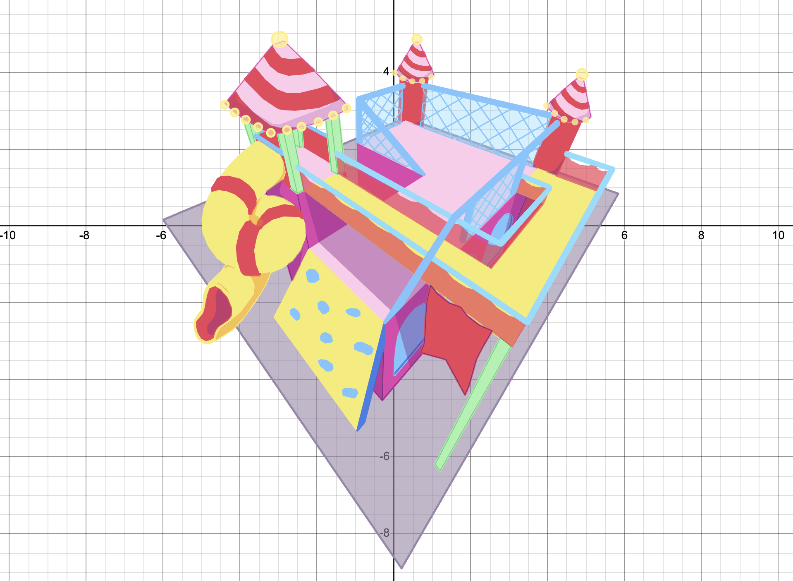

Inspired by M.C. Escher, this project connects art and math by exploring the illusion between 2D and 3D space. Although the building appears three-dimensional, it was created entirely on a 2D Desmos graph using geometry and perspective to form the impossible architecture.